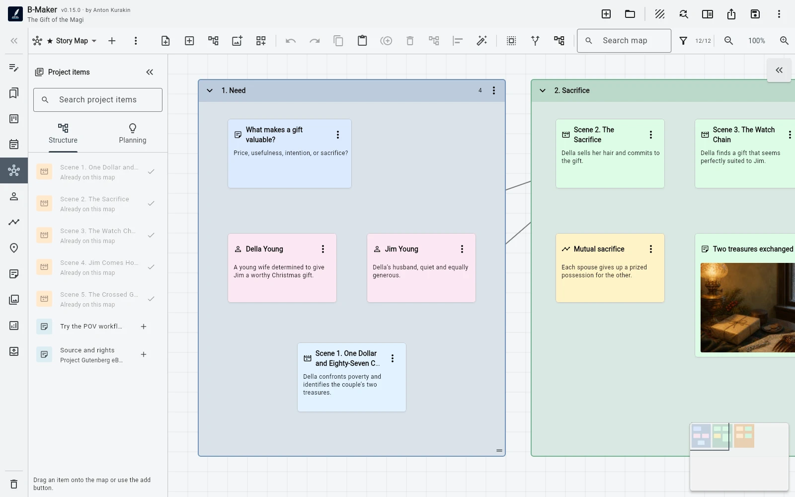

Idea Map поддерживает несколько досок, свободное размещение, связи, группы, изображения, поиск, фильтры, миникарту, автораскладку, стопки и реальные сущности проекта.
Сначала свободный холст
Доска не навязывает дерево или единственную mind-map иерархию. Заметки можно размещать пространственно, связывать, группировать, складывать в стопки и смешивать с изображениями и сущностями проекта.
Такой формат подходит для brainstorming, карт отношений, кластеров исследований, сцен и структурных экспериментов.
Узлы знают проект
Глава, сцена, персонаж, сюжетная линия или карточка планирования могут находиться на доске как настоящая сущность, а не скопированная подпись. Визуальный вид и структура рукописи работают с одними данными.
На доску можно добавить целую ветку структуры и переходить между картой и редактором.
От заметки к тексту
Заметки и группы можно превращать в реальные разделы рукописи с первой версией. Поэтому карта не обязана умереть как отдельный planning-артефакт после начала написания.
Если нужен полностью независимый холст, отдельный специализированный tool может быть проще; преимущество B-Maker — в непрерывности.
Частые вопросы
Можно превратить идею в настоящую главу?
Да. Заметки и группы можно преобразовать в разделы рукописи.
Можно создать несколько досок Idea Map?
Да. Для разных частей проекта можно использовать отдельные визуальные доски.
Связанные гайды B-Maker
B-Maker vs Scapple — встроенная Idea Map или свободный холст? · Как организовать роман и не превратить письмо в администрирование · Программа для написания романа — планирование, текст, версии и публикация
Попробуйте этот процесс на реальном проекте.
Откройте B-Maker в браузере и начните с одной главы или статьи. Глубокие инструменты подключайте только тогда, когда они понадобятся проекту.